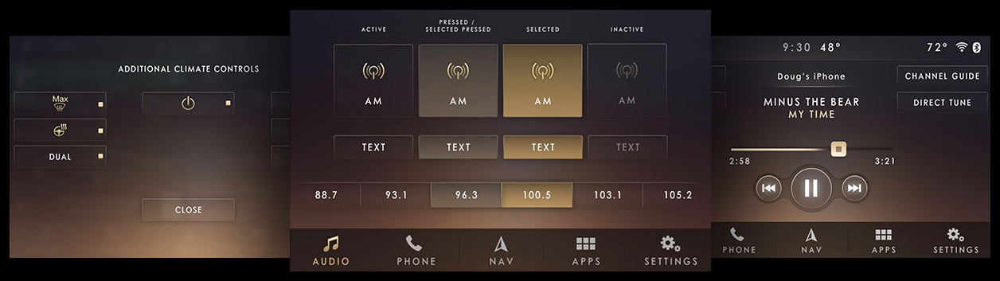
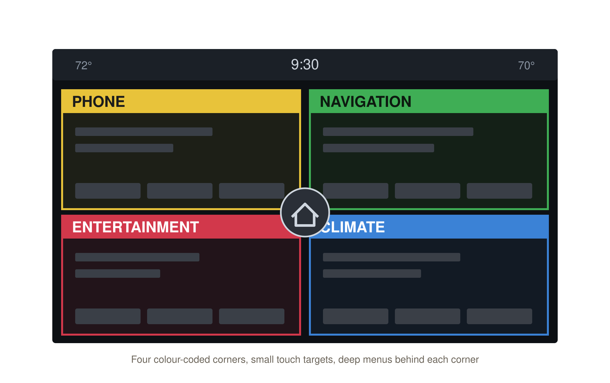
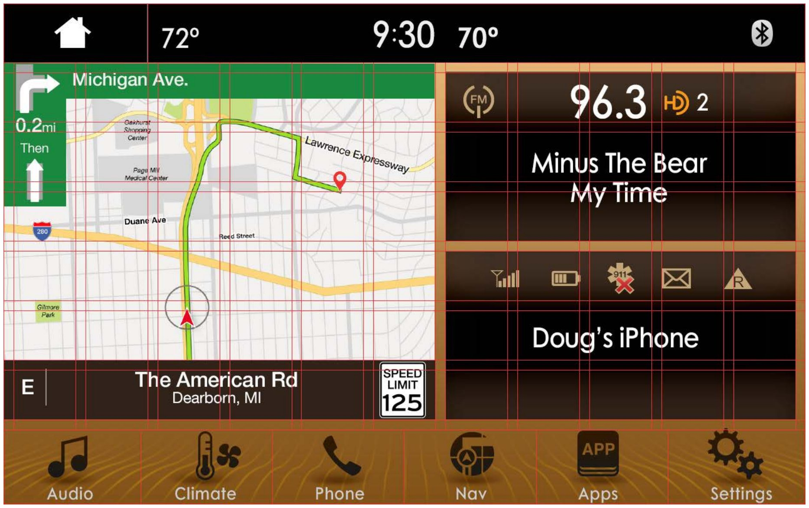
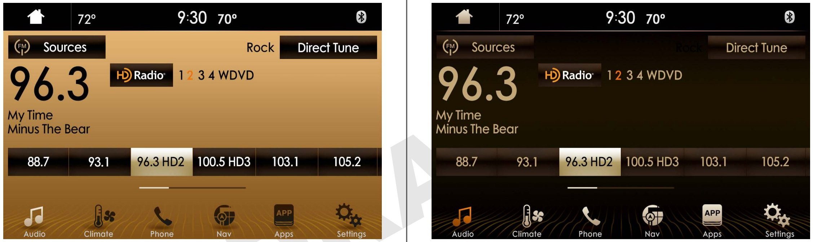
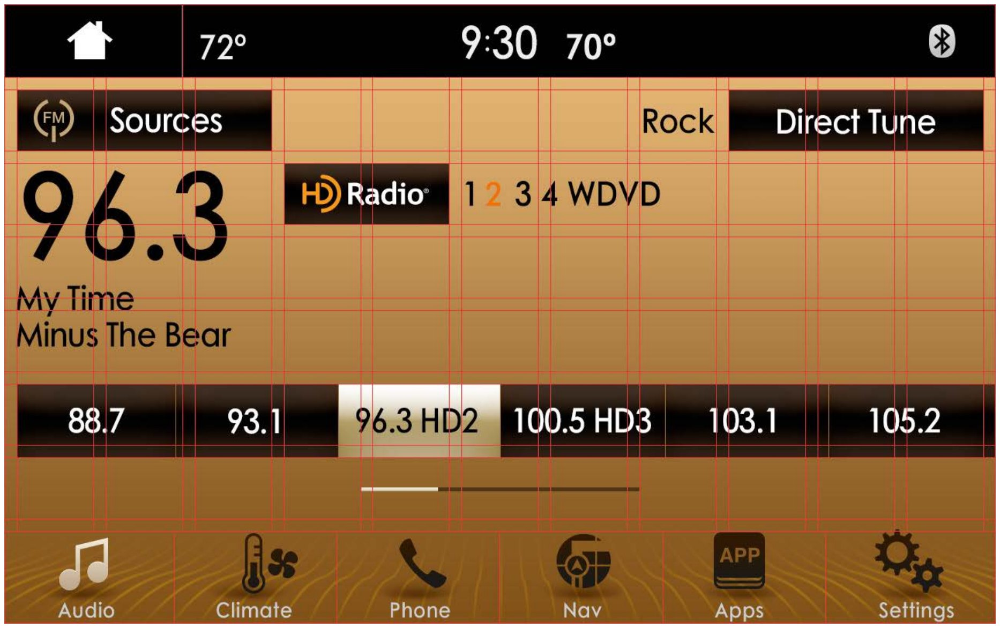
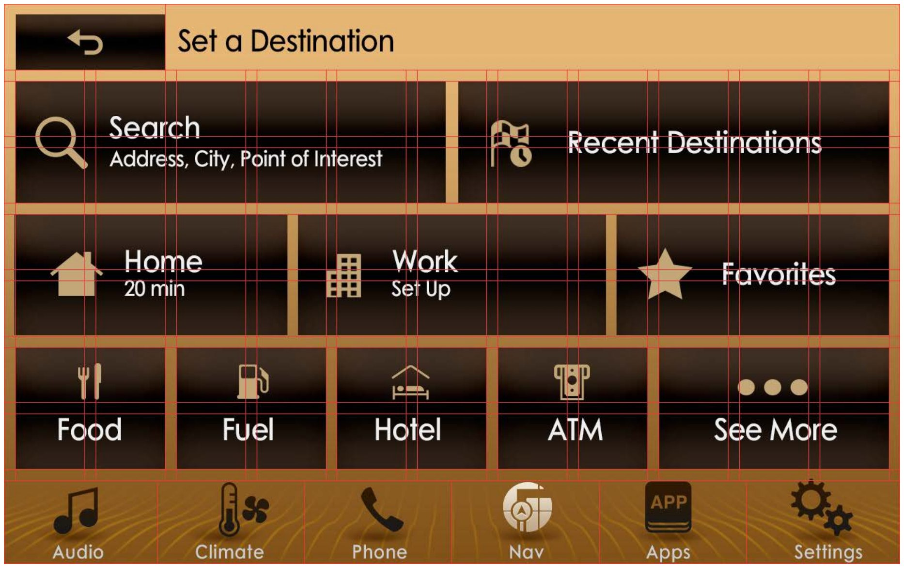
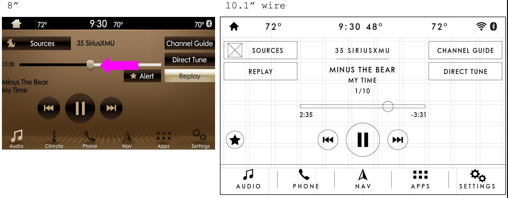

Ford SYNC 3
Built Ford's product design organization and led SYNC 3, the system that replaced MyFord Touch.

The problem
MyFord Touch was slow, cluttered and widely criticised, and complaints about it were dragging down Ford's quality and satisfaction scores in J.D. Power and other surveys. Ford needed to win back trust in its in-car experience.
The approach
Led the design team that rebuilt the system from scratch on QNX, with an 8-inch capacitive touchscreen that responds like a phone.
Set the principles the team designed to: a home screen of three zones (navigation, audio, phone) that expand on touch; kept physical knobs for volume and climate; shortened voice commands to natural phrases; added over-the-air updates.
Established Ford's first automotive design system and shaped a 10-year EV and infotainment roadmap with product leadership.
The SYNC 3 home-screen layout is still in Ford vehicles today.
Results






Leadership
Built the product design organization from the ground up, hiring and structuring the team that shipped SYNC 3 across Ford and Lincoln.